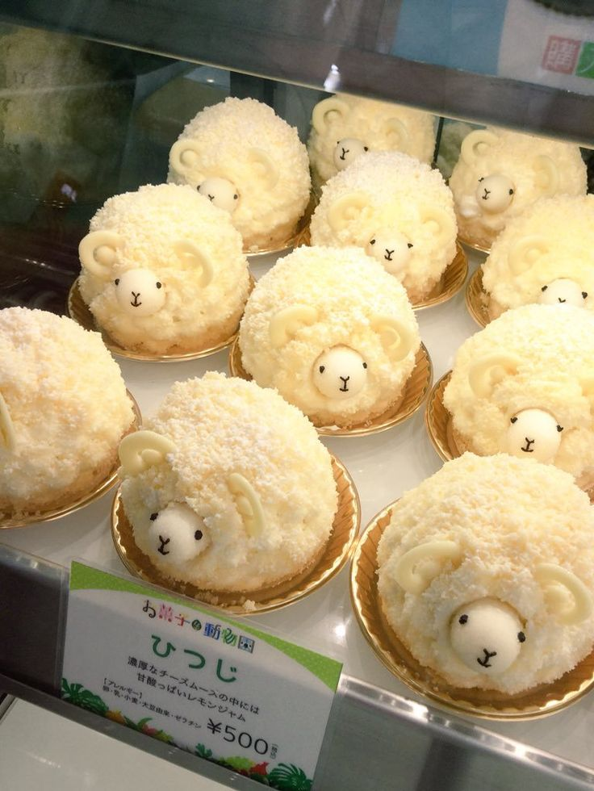
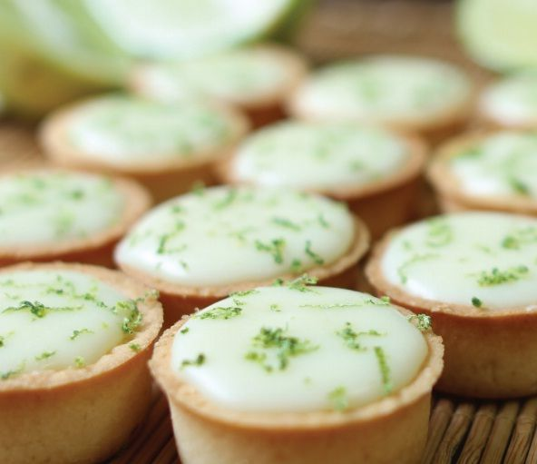
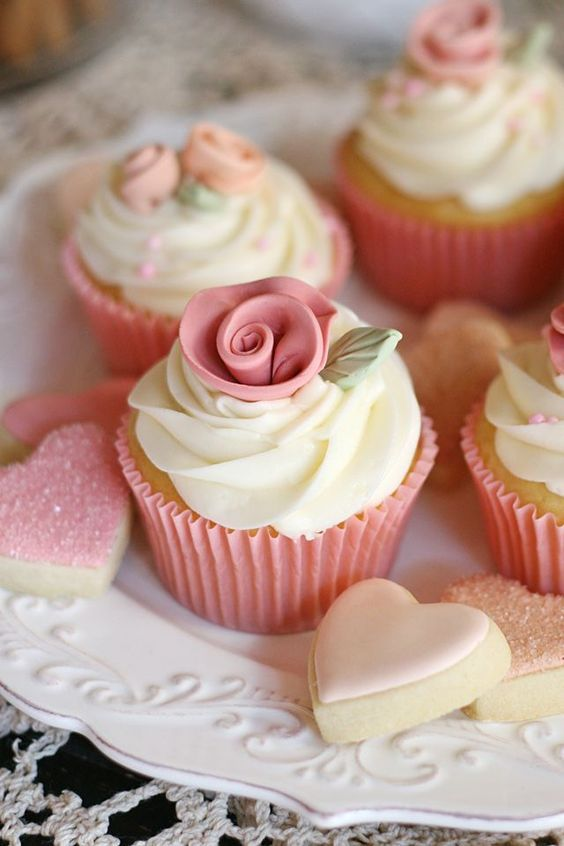
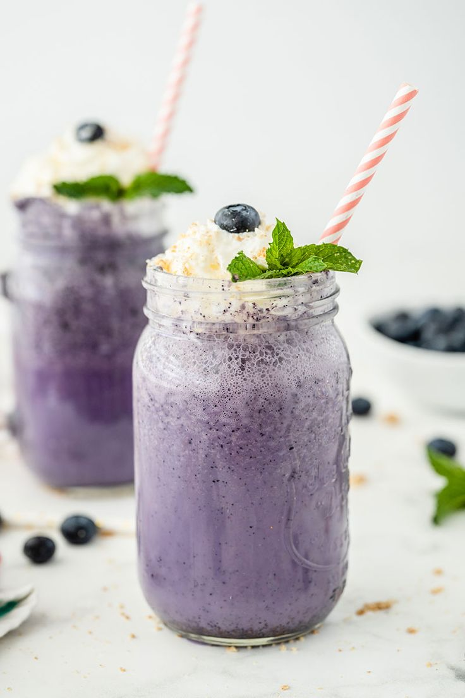

1,2,3 Carneirinhos
Perfeito para um noite de aventuras

ERRO 404
Como esse até seus problemas podem dar uma pausa

Tostilhas De Limão
O amargor que desce redondo

Meiaa-Noite Eu Te Conto
Se você conseguir não dormir

Jardim Do Éden
A flor que vem direto do paraíso

Alice no País das Maravilhas
Um gole e você estará correndo atrás de um coelho

Pó de Anjo
Apenas tome cuidado para não voar

Brow Bis
Cuitado Com O Urso!